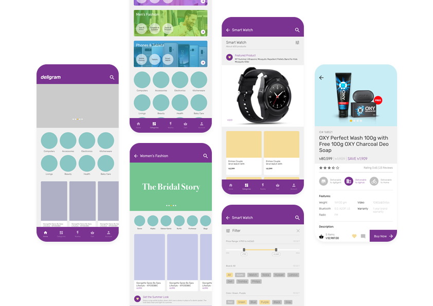
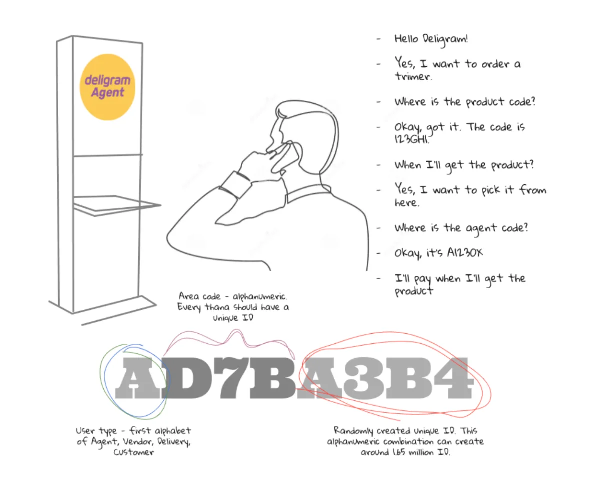
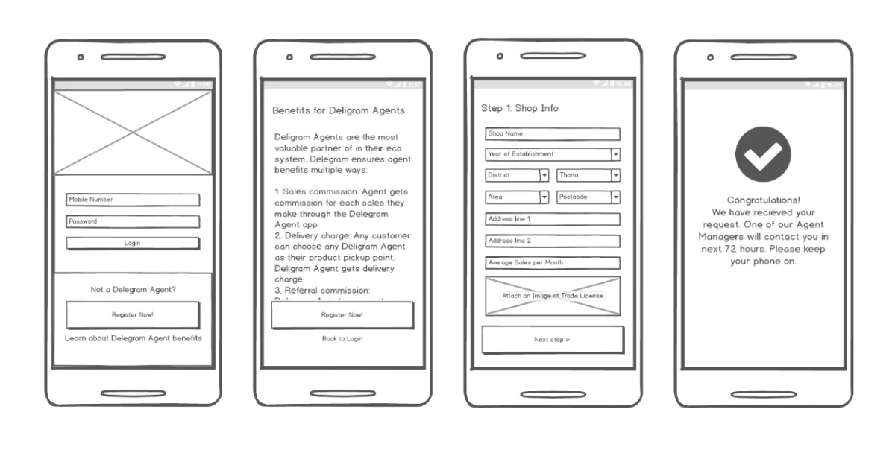

About Deligram
Deligram is a technology-enabled retail company addressing the friction of shopping, online and offline, through a hybrid, localized model of omnichannel commerce.
The Problem
Deligram had spent a long time building out its backend, inventory, delivery, and the operational backbone of the business. But customer acquisition channels had been left waiting far too long. There was a website, but no Android or iOS app. Before investing in a full app development team, the business needed something faster.
Mobile-First, Built Fast
My role was focused on making the team more customer-centered: improving engagement, strengthening partner relationships, and finding quick, practical solutions to problems the internal team, customers, and partners were all facing.
The fastest answer wasn't a native app. It was a lightweight, mobile-optimized website with an app-like feel, built quickly by the existing team. We paired it with an Android app that loaded the same experience through web views, giving Deligram a real mobile presence without the cost or timeline of full native development.

The app-like designs were first built for the mobile site, and eventually became Deligram's mobile-first storefront: category browsing, product listings, and the product detail page.
The product page carried the same catalog whether a customer arrived through the app, the website, or an agent point, one experience across every channel.
Solving Delivery Without an App: Order by Phone Call
One of the sharper problems was reaching customers who weren't going to download an app at all. I designed a phone-order system built around a revised Deligram kiosk placed at agent points, holding a physical product catalog. A customer could call in, reference a product code from the catalog, and place an order without ever touching a screen. Delivery routed to their chosen agent point using a matching agent code.
The system needed a reliable way to identify both people and places without any digital account behind it. I designed a coding structure using the first letter of the user type (Agent, Vendor, Delivery, or Customer) combined with a randomly generated alphanumeric ID, a scheme capable of supporting up to 165 million unique IDs. Simple enough to read off a phone call, robust enough to scale.

Not the usual UX design work — something built for a real, practical world. The kiosk catalog and coding structure behind the phone-order system.
Deligram Agent Onboarding
Deligram's agent network still ran on a manual, offline process for collecting agent information and documentation, slow and hard to scale. I designed an onboarding flow through the Deligram Agent app that let anyone interested in becoming an agent register directly: entering shop details, location, and average sales, and submitting a trade license image, all from their phone. It was meant to replace a paperwork-heavy process with something an agent could complete on their own in minutes, while still capturing what Deligram needed to review and approve them.

The last thing I designed at Deligram: the Agent app's self-serve onboarding flow.
Reflection
It was a really short time, ended before it was started. When I left Deligram, the pandemic was knocking at the door, with big turmoil ahead. It wasn't a great time to leave, but I also wasn't in the controlling chair.
What followed still sits oddly with me. The pandemic turned out to be a boom time for e-commerce almost everywhere, but Deligram went the other way, scaling operations down, shrinking the team, and eventually closing the business roughly a year after I left.
It's a hard outcome to square with what the company had going for it: one of the sharpest teams I've worked with, real backing, and a strong outlook at the time. I still think about it occasionally, and I don't have a clean answer for what went wrong.